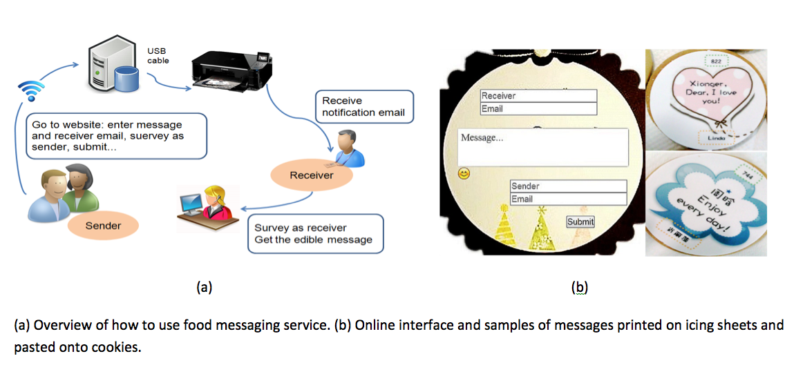

Abstract
Food is more than just a means of survival; it is also a form of communication. In this paper, we investigate the potential of food as a social message carrier (a.k.a., food messaging). We conducted exploratory interviews followed by a field study in a large information technology (IT) company over four weeks and follow-up interviews to investigate how people accept, use, and perceive food messaging. We collected 904 messages sent by 343 users. Our results suggest strong acceptance of food messaging as an alternative message channel. Further analysis implies that food messaging embodies characteristics of both text messaging and gifting. It is preferred in close relationships for its evocation of positive emotions. As the first field study on edible social messaging, our empirical findings provide valuable insights into the uniqueness of food as a message carrier and its capabilities to promote greater social bonding.
Materials
PDF |
Slides |
BibTeX